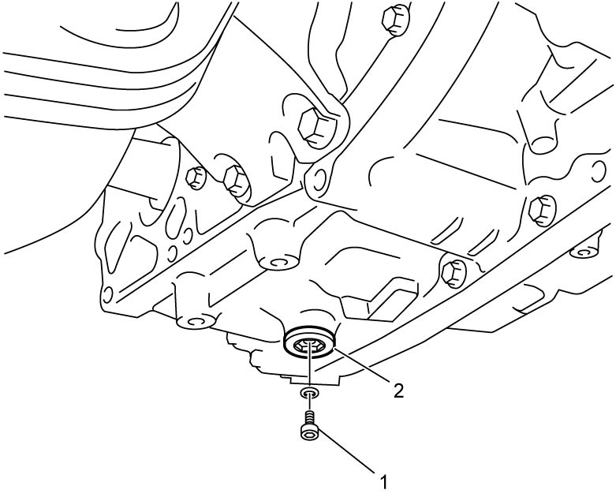
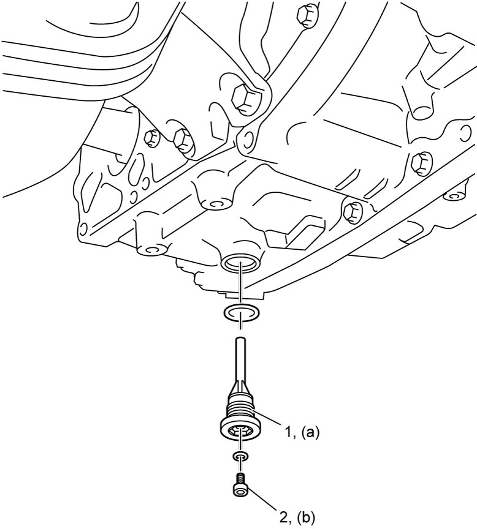

5A
| ATF Change |
NOTICE:
Failure to take proper precautions when replacing ATF can cause failure of the A/T.
•Do not use any fluid other than the specified ATF. Use of any other fluid may cause juddering or other faulty conditions.
•Avoid overfilling the A/T. If the A/T is filled with excessive fluid, the fluid can foam and flow out through the breather.
The resulting loss of fluid may cause slippage and failure of the transaxle.
•Replace ATF when the A/T is replaced and also when the vehicle has been driven under excessively high load.
•Avoid overfilling the A/T. If the A/T is filled with excessive fluid, the fluid can foam and flow out through the breather.
The resulting loss of fluid may cause slippage and failure of the transaxle.
•Replace ATF when the A/T is replaced and also when the vehicle has been driven under excessively high load.
1)Hoist vehicle.
2)When engine is cool, remove ATF over flow plug (1) and then remove ATF drain plug (2) to drain ATF.


 "Expand image")
NOTE:
ATF does not drain completely from drain plug.
3)Install ATF drain plug (1) with new O-ring and then tighten it to specified torque.
4)Install ATF over flow plug (2) with new O-ring and tighten it to specified torque.

 "Expand image")
5)Lower vehicle, remove battery and battery bracket.
•M16A model: 
•K14C model:
•K14C model:
6)Remove ATF filler plug and replenish proper amount of specified ATF.
ATF capacity
When draining from drain plug hole:
4.0 liters (8.45 / 7.04 US/Imp. pt.)
When overhauling (M16A model):
5.8 liters (12.26 / 10.21 US/Imp. pt.)
When overhauling (K14C model):
6.2 liters (13.10 / 10.91 US/Imp. pt.)
7)Check fluid level referring to Steps 7) – 17) of ATF Level Check.